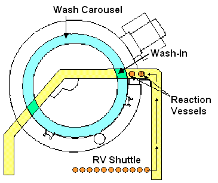
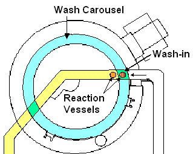
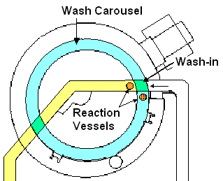
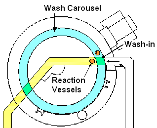
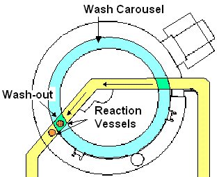

System Exerciser Routines Theory of Operation
Purpose
This document explains the process for each exerciser test in the System Exerciser screen of the Access software. Five exerciser tests are built into the Access and Access 2 instrument software.
Time Required to Run Each Exerciser
| Exerciser | Approximate Time for One Cycle (minutes) |
|---|---|
| Vessel Holder | 3 to 4 |
| Wash Car. Transfer | 5 |
| Mixer | 2 |
| Incubator Track | 2 |
| Wash Arm | 2 |
Incubator Track (Vessel Holder) Exerciser
This section describes the operations that the instrument performs when the Incubator Track (Vessel Holder) exerciser test starts cycling.
| Step | Action |
|---|---|
| 1 | When
Start Cycling is selected, the exerciser transfers 12 RVs from the shuttle into consecutive vessel holders on the incubator belt.
Note:
|
| 2 | The 12 RVs are transferred from the incubator belt into the shuttle. |
| 3 | The sequence is repeated four more times, with each repetition transferring the 12 RVs onto the next sequential set of 12 vessel holders. |
| 4 | The cycle is complete when all 60 vessel holders on the belt have been loaded and unloaded with an RV from the shuttle, and the 12 RVs have been returned to the shuttle. |
| 5 | When
Stop Cycling is selected, the current cycle of RVs into the 60 incubator belt clips finishes, the 12 RVs are returned to the RV shuttle and then ejected, and the instrument returns to the Ready mode.
Note: If
Stop Cycling is not selected during the cycle, then the cycle repeats with the same 12 RVs.
|
Evaluate the Incubator Track (Vessel Holder) exerciser operation.
- Observe each RV transfer from the shuttle into the incubator and from the incubator into the shuttle.
- Mark the vessel holders that are moved by an RV moves during the shuttle to incubator or incubator to shuttle transfers.
- Troubleshoot as required:
- If no vessel holders move because of an RV transfer, then shuttle-to-incubator RV transfer function has been verified.
- If some of the vessel holders move because of an RV transfer, then replace the affected vessel holders.
- If most of the vessel holders move because of an RV transfer, then check the belt tension and the shuttle and incubator alignment.
- If shuttle or incubator errors occur, then the shuttle might require aligning, the incubator belt might require calibrating, tensioning, or aligning, or the incubator belt or pulleys might be defective.
- If any vessel holders were replaced, then calibrate the incubator belt and repeat the exerciser.
Note: Refer to theCalibrating Incubator Belt procedure.
Wash Carousel Transfer Exerciser
This section describes the operations that the instrument performs when the Wash Carousel Transfer exerciser test starts cycling.
| Step | Action |
|---|---|
| 1 | When
Start Cycling is selected, two RVs are transferred into consecutive vessel holders on the incubator belt.
Note: If fewer than 2 RVs are in the shuttle, then the RVs in the shuttle are ejected and a full row of RVs is advanced into the shuttle
|
| 2 | The incubator belt moves counter-clockwise until the first RV is one position before the wash-in location.  |
| 3 | The incubator belt moves the second RV to the wash-in location by moving two positions counterclockwise.  |
| 4 | The wash carousel moves the second RV off the incubator belt in both directions by rotating one position clockwise followed by two positions counterclockwise.   |
| 5 | The wash carousel moves the RV back onto the incubator belt by rotating one position clockwise. |
| 6 | The incubator belt moves the RV out of the wash-in location by moving two positions clockwise.
Note: One transfer is complete and the RVs are back to the position in step 2.
|
| 7 | The wash carousel rotates one position clockwise and the transfer sequence is repeated until the second RV has been moved on and off the incubator belt at 27 wash carousel positions. |
| 8 | The incubator belt moves counterclockwise until the first RV is one position before the wash-out location and the transfer sequence is repeated on the remaining 28 wash carousel positions.  |
| 9 | The cycle is complete when all 55 positions on the wash carousel have been loaded and unloaded with an RV from the incubator belt, and the two RVs have been returned to the shuttle. |
| 10 | When
Stop Cycling is selected, the current cycle of RVs into the 55 wash carousel positions finishes, the two RVs are returned to the RV shuttle and then ejected, and the instrument returns to the Ready mode.
Note: If
Stop Cycling is not selected during the cycle, then the cycle repeats with the same two RVs.
|
Evaluate the Wash Carousel Transfer exerciser operation.
- Observe each RV transfer from the incubator belt into the wash carousel and from the wash carousel onto the incubator belt.
- Note any lateral vessel holder movement when the incubator belt moves.
- Note any vessel holder movement or abnormal noises when the wash carousel moves.
- Troubleshoot as required:
- If no vessel holders move because of an RV transfer, then wash-in and wash-out RV transfer function has been verified.
- If some of the vessel holders move because of an RV transfer, then the affected vessel holders could be defective, or the incubator belt might require calibrating or tensioning.
- If most of the vessel holders move because of an RV transfer, then check the incubator and wash carousel alignments.
- If wash carousel or incubator belt errors occur, then:
- The incubator belt might require calibrating, tensioning, or aligning.
- The incubator belt or pulleys could be defective.
- The wash carousel could require aligning.
- The wash carousel bearings could be worn.
- The wash carousel fingers could be bent
- The shot pin (if installed) could require lubricating.
- The wash carousel and incubator could be dirty with dried buffer salts or dust.
- If any vessel holders were replaced or the belt has been retensioned, then calibrate the incubator belt and repeat the exerciser.
Note: Refer to theCalibrating Incubator Belt procedure.
Mixer Exerciser
This section describes the operations that the instrument performs when the Mixer exerciser starts cycling.
| Step | Action |
|---|---|
| 1 | When
Start Cycling is selected, three RVs are transferred into consecutive vessel holders on the incubator belt.
Note: If fewer than three RVs are in the shuttle, then the RVs in the shuttle are ejected and a full row of RVs is advanced into the shuttle
|
| 2 | The three RVs are moved onto the wash carousel so that one RV is under each of the three dispense and mixing stations. |
| 3 | The wash arm is lowered 700 steps, so that the actuator arms release the pinch rollers and allow them to press against the RVs. |
| 4 | The mixer motor is enabled, moving the mixer belt counterclockwise for 45 seconds and then clockwise for 45 seconds. |
| 5 | The mixer motor stops, the wash arm raises, and the three RVs are returned to the shuttle to complete the cycle. |
| 6 | When
Stop Cycling is selected the current cycle of RVs into the mixing positions finishes, the three RVs are returned to the RV shuttle and then ejected, and the instrument returns to the Ready mode.
Note: If
Stop Cycling is not selected during the cycle, then the cycle repeats with the same three RVs.
|
Evaluate the Mixer exerciser operation.
- Observe the mixing:
- The mixer belt should not be abnormally worn.
- There should be no visual fluctuation in speed.
- Listen for excessive or abnormal noises.
- The pinch rollers should not visibly bounce while mixing.
- While gently touching the top of the pinch roller, only a slight, steady vibration should be felt when the mixer is enabled.
- Troubleshoot as required:
- Abnormal noises could be caused by defective or dirty pinch rollers, mixer pulleys, bearings, or o-rings.
- Excessive vibration or bouncing of the pinch rollers could be caused by dirty or defective pinch rollers.
- Mixer belt speed fluctuations could be caused by dirty or defective mixer pulleys, defective or dirty pinch rollers, worn or poorly tensioned mixer belt.
- Mixer speed errors could be caused by some of the above or loose wires on the mixer motor.
- Repeat the exerciser to verify repairs.
Incubator Track Exerciser
This section describes the operations that the instrument performs when the Incubator Track exerciser starts cycling.
| Step | Action |
|---|---|
| 1 | When
Start Cycling is selected, four RVs are transferred into consecutive vessel holders on the incubator belt.
Note: If fewer than four RVs are in the shuttle, then the RVs in the shuttle are ejected and a full row of RVs is advanced into the shuttle
|
| 3 | The incubator belt makes one complete counterclockwise revolution in a series of 12 short moves (five vessel holder position) separated by a short pause. |
| 4 | The incubator belt makes one complete clockwise revolution in a series of 12 short moves (five vessel holder position) separated by a short pause. |
| 5 | Steps 3 and 4 are repeated three more times. |
| 6 | The incubator belt makes one complete revolution in two long (30 vessel holder position) counterclockwise moves separated by a short pause. |
| 7 | The incubator belt makes one complete revolution in two long (30 vessel holder positions) clockwise moves separated by a short pause. |
| 8 | Steps 6 and 7 are repeated once. |
| 9 | The four RVs are returned to the shuttle to complete the cycle. |
| 10 | When
Stop Cycling is selected, the current cycle of four RVs finishes, the four RVs are returned to the RV shuttle and then ejected, and the instrument returns to the Ready mode.
Note: If
Stop Cycling is not selected during the cycle, then the cycle repeats with the same four RVs.
|
Evaluate the Incubator Track exerciser operation.
- Look for incubator errors and listen for excessive or abnormal noise from the incubator track or pulleys.
- Look for possible causes for incubator errors:
- Debris in the incubator track (broken vessel holders, downed RVs, dust, dried spills).
- Worn pulley bearings.
- Poorly tensioned, defective, or uncalibrated incubator belt.
- Defective vessel holders (bent legs, broken flags, or missing).
- Misaligned incubator belt, shuttle, or wash carousel (shuttle transfer, wash-in, wash-out).
- Defective or dirty incubator belt home or index sensors.
- Repeat the exerciser to verify repairs.
Wash Arm Exerciser
The Wash Arm exerciser stresses the wash arm function of raising and lowering the wash probes.
| Step | Action |
|---|---|
| 1 | When
Start Cycling is selected, three RVs are transferred into consecutive vessel holders on the incubator belt.
Note: If fewer than three RVs are in the shuttle, then the RVs in the shuttle are ejected and a full row of RVs is advanced into the shuttle.
|
| 3 | The three RVs are moved onto the wash carousel so that one RV is under each of the three aspirate stations. |
| 4 | The wash arm moves downward one long descent of 995 steps, followed by four short descents of 114 steps. |
| 5 | At the end of the final descent, the aspirate probes contact the bottom of each RV and deflect upward. |
| 6 | The wash arm returns to the home position. |
| 7 | The up and down motion sequence is repeated 14 more times. |
| 8 | The three RVs are returned to the shuttle to complete the cycle. |
| 9 | When
Stop Cycling is selected, the current cycle finishes, the three RVs are returned to the RV shuttle and then ejected, and the instrument returns to the Ready mode.
Note: If
Stop Cycling is not selected during the cycle, then the cycle repeats with the same three RVs.
|
Evaluate the Wash Arm exerciser operation.
- Observe the wash arm:
- Listen for abnormal noises.
- Look for vertical play in the wash arm nut band. Lead screw rotation immediately transfers into vertical wash arm movement through the wash arm nut and wash arm nut band.
- Observe the aspirate probes as the wash arm descends:
- The probes should pass through the wash carousel housing without contacting the sides of the holes.
- When the wash arm has fully descended, the aspirate probes should touch the bottom of the reaction vessels and deflect up.
- Replace the lead screw assembly if the:
- Screw appears worn.
- Wash arm has more than 0.010-in vertical play.
- Wash arm nut band is cracked or has vertical play.
- Ensure that the:
- Wash arm and nut band are installed correctly.
- Aspirate probes are not bent and are seated correctly.
- Tubing and wires do not impede the wash arm movement or pull up on the probes.
- Wash arm is aligned correctly.
- Wash arm moves freely along the linear slide (with motors disabled).
Note:- The linear slide requires only slight lubrication with type 2 lithium grease.
- Do not lubricate the lead screw.
- Repeat the exerciser to verify repairs.